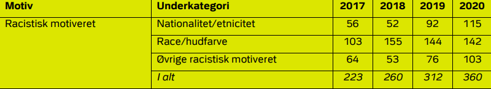

I perioden 2008 - 2019 mener 8 % af ofrene, at volden mod dem helt sikkert var motiveret af racisme.
Det ville svare til, at mellem 4300 og 5800 personer hvert år udsættes for racistisk motiveret vold.
Yderligere 7 % mener/tror, at volden mod dem måske skyldtes racisme.
45% af invandre og efterkommere fra ikke vestlige lande svare at de har oplevet diskrimination.
Det viser de nyeste tal fra det nationale integrationbarometer
som udlændinge- og intergrationsministeriet står bag
43% procent af danskere er enten helt enig eller delvist enig i at det er ok at betegne sorte mennesker som negre.
Kun 28% var helt uenig og delvist uenig i det, de resterende 29% var hverken enig eller uenig
Kvinder der bære tørklæde som ikke kommer fra et vestligt land skal sende 60% flere jobansøgning for at finde et job
Folk med ikke vestlig baggrund har ifølge rapporten fra ankestyrelsen svære ved at finde lejeboligere
Rapporten viser, at ansøgere med mellemøstligt klingende navne i snit skal sende 27 procent flere
ansøgninger end ansøgere med danskklingende navne.